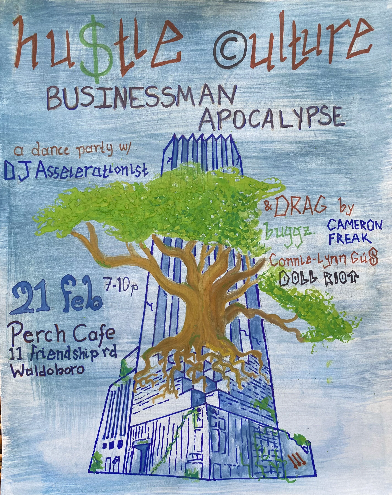

nothing
currently
posted.
this space has been reserved for future disturbances.
please check back occasionally.
public notice / evidence of activity
the resident has been observed outside the premises.
reports, appearances, & other public disturbances.
this space has been reserved for future disturbances.
please check back occasionally.
a post-apocalyptic drag show.
a last-minute need.
an unexpected cockroach.
subject's first drag gig.
located in a teeny tiny local café, at a trash-adorned, post-apocalyptic, anti-capitalist dance party.
subject originally went by the name connie-lynn gus*, an identity reportedly long-awaiting an opportunity to hatch.
*irrefutably great drag name. source: name of subject's sim during any sims playthrough across lifespan
however, an unexpected vacancy left the event in need of a kitten (a.k.a. tip monitor).
given the post-apocalyptic setting, an actual kitten seemed wildly inappropriate.
a cockroach was selected instead.
the prepared performance & persona did not proceed, nor feel as comfy, as hoped or expected. the crowd enjoyed the spectacle, however subject in question maintained an unexpected dysphoria.
the cockroach, however, appears to have thrived.
skittering around, interacting with the humans, & generally behaving like a creepy lil' crawly proved unexpectedly enjoyable. subject reports being a bug "felt quite natural."
subsequent reports indicate that the cockroach was retained as a permanent persona.
whereabouts of connie-lynn gus remain uncertain.
status / ongoing infestation

ATTENTION
whereabouts inconsistent.
may respond to music and/or attention.
report a sighting →oh. that one's been there a while.